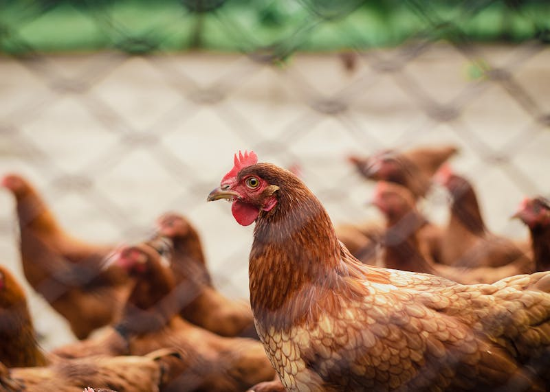
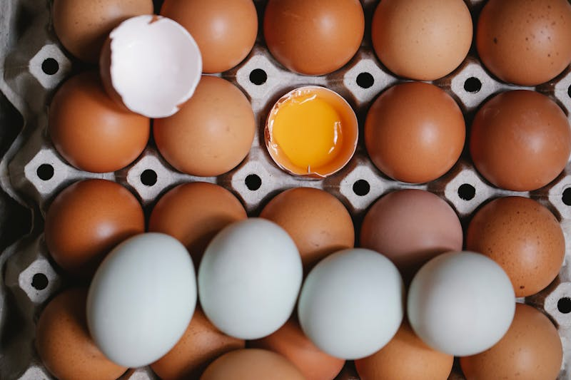
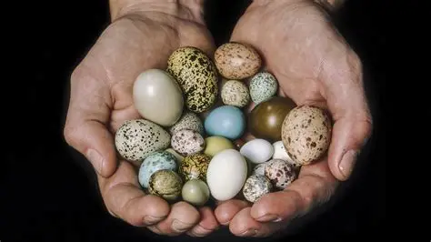
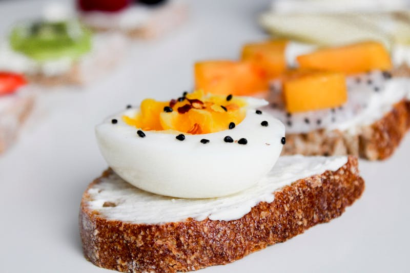
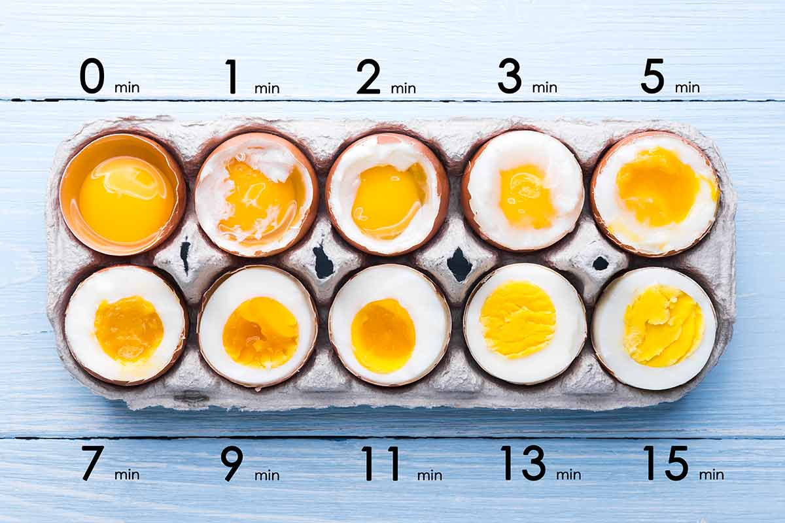

All About Eggs
Everything you need to know about the incredible, edible egg. This page is your one-stop shop for egg types, nutrition facts, doneness guides, and a brief but wildly entertaining history of how eggs conquered the world. Knowledge is power, and in this case, knowledge is also breakfast.
A Brief History of Eggs

For as long as humans have been around, they've been eating eggs. Jungle fowl, the wild ancestors of modern chickens, were first domesticated in Southeast Asia thousands of years ago, and it didn't take long for people to realize that the things those birds were sitting on were absolutely delicious. Ancient Egyptians and Chinese were among the first civilizations to develop large-scale poultry farming, and by the time the Roman Empire was in full swing, eggs were a dietary staple. Eggs have since become one of the most consumed foods on Earth, with the world producing over 1.5 trillion eggs per year. That's a lot of omelets!
The phrase "which came first, the chicken or the egg?" has been driving philosophers insane since at least Ancient Greece, where both Aristotle and Plutarch debated the question. The scientific answer, for the record, is the egg, since the genetic mutation that created the first true chicken happened inside an egg laid by something that was almost, but not quite, a chicken. You're welcome.
Egg Types and Sizes
Eggs come in far more varieties than most people realize. From the standard grocery store carton to exotic bird eggs you have probably never heard of, the world of eggs is surprisingly diverse. Here are the main categories you should know about.

Commercial Eggs
These are the standard white and brown eggs you find at the grocery store. The shell color has zero impact on taste or nutrition, but people like to think they do. They come in many sizes from peewee to jumbo, and most recipes just assume you are using large. These eggs are often graded as either AA, A, or B, based on quality.

Farm-Fresh Eggs
Free-range and pasture-raised eggs from small farms. These often have darker, richer yolks because the hens eat a more varied diet of bugs, seeds, and grass (yum). The shells come in beautiful shades of brown, cream, blue, and even green depending on the breed. Your neighbor who keeps backyard chickens will never stop telling you about them.

Other Animal Eggs
Chicken eggs are the most commonly eaten, but they are just the beginning. Duck eggs are larger and have a richer flavor, quail eggs are tiny and delicate, and goose eggs are enormous. If you are feeling truly adventurous, an ostrich egg is the equivalent of about 24 chicken eggs. You're going to need a bigger pan.
Marc Andreessen
Known for his influence in the development of the first major web browser, Mosaic, the legendary tech investor and venture capitalist has an unmistakably ovoid cranium. When I was looking for images for this site, I mistook this one for a bearded egg wearing a shirt.
Nutrition Facts

Eggs are one of the most nutritionally complete foods on the planet. A single large egg contains about 70 calories, 6 grams of protein, 5 grams of fat, and a whole alphabet of vitamins including A, B2, B5, B12, D, E, and K. The yolk is where most of the good stuff lives, packed with choline, which is essential for brain function, and lutein, which supports eye health. If someone tells you to only eat egg whites, they are missing out on the best part.
For years, eggs got a bad reputation because of their cholesterol content. A single egg contains about 186 milligrams of cholesterol, which sounds scary until you learn that dietary cholesterol has far less impact on blood cholesterol than scientists originally thought. Modern nutrition research has largely cleared eggs of their bad-boy status, and most health organizations now agree that eating one to three eggs per day is perfectly fine for most people. The egg has been vindicated, and it is delicious.
Doneness Guide

Egg doneness is a spectrum, and where you land on it is a deeply personal choice. For boiled eggs, a soft boil at around six minutes gives you a runny, jammy yolk that is perfect for dipping toast. A medium boil at eight to nine minutes produces a yolk that is set around the edges but still slightly creamy in the center. A hard boil at twelve minutes gives you a fully set yolk, ideal for deviled eggs or egg salad. Go much longer than that and you will start to see a greenish-gray ring around the yolk, which is harmless but not exactly appetizing.
For fried eggs, sunny side up means the egg is never flipped and the yolk stays completely runny. Over easy means a quick flip with a still-runny yolk. Over medium gives you a partially set yolk, and over hard means the yolk is fully cooked through. Scrambled eggs are done when they are just barely set and still look slightly wet in the pan — carryover heat will finish the job. If they look done in the pan, they are already overdone on the plate.